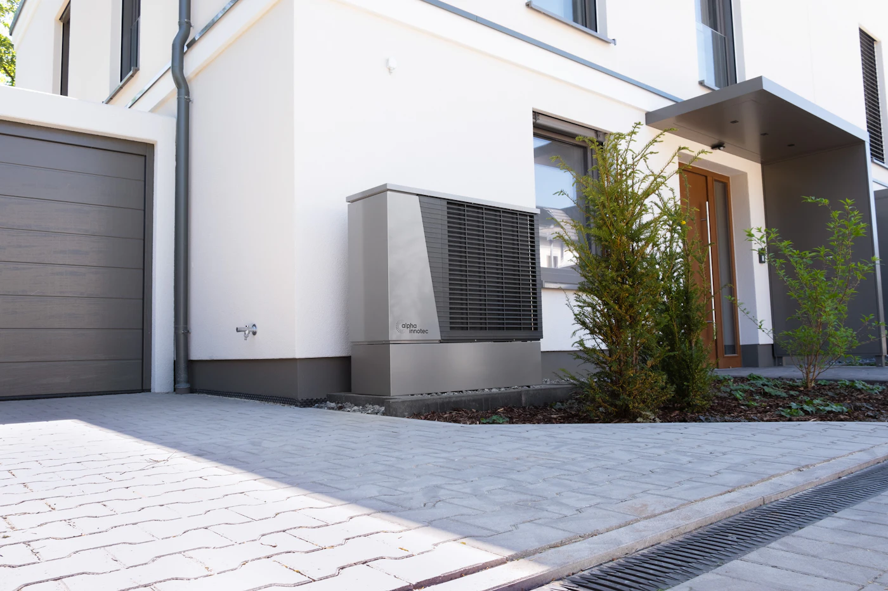
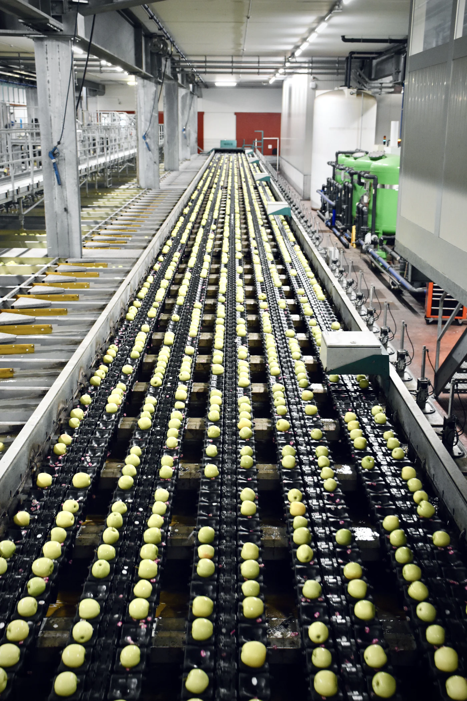
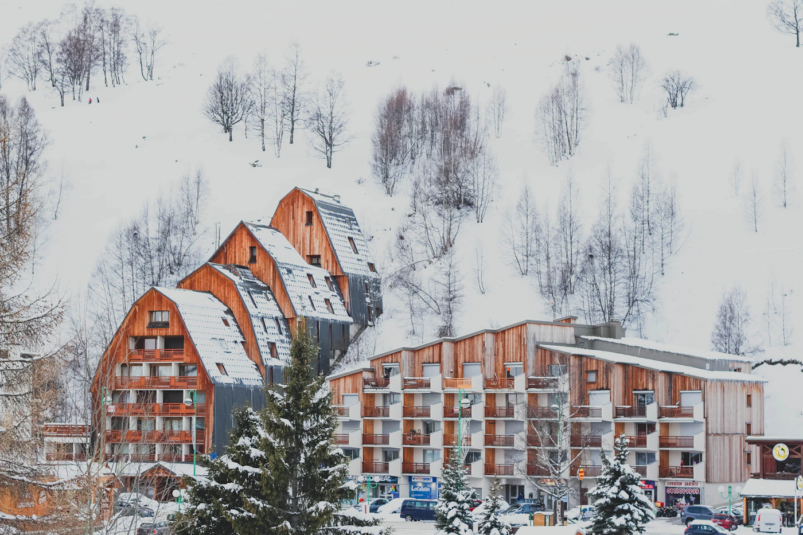
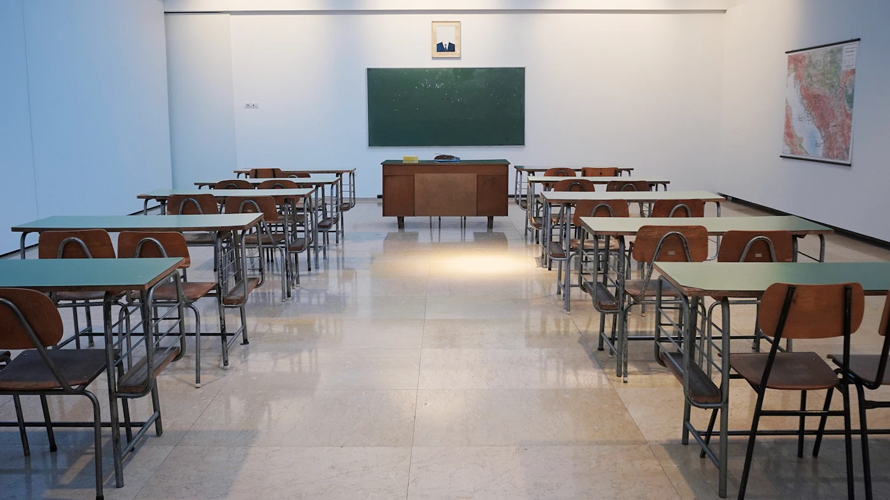
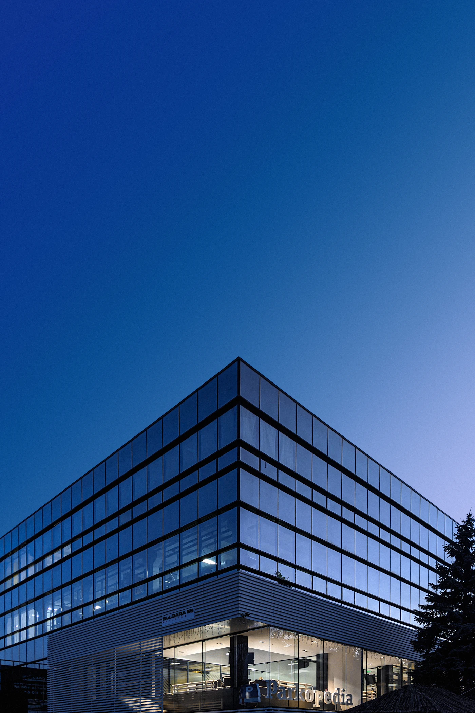

Projekti koji govore za nas
Pet projekata iz različitih delova Srbije, od porodične kuće do poslovnog objekta. Za svaki opisujemo izazov, rešenje i rezultat u konkretnim brojkama. O radu na svetinjama pišemo posebno.
Izaberite projekat
Porodična kuća, Valjevo
- Površina
- 210 m²
- Instalisana snaga
- 12 kW (toplotna pumpa)
- Oprema
- Viessmann
- Trajanje radova
- 9 radnih dana
- Obim posla
- Projektovanje, izvođenje, servis


Izazov
Kuća iz 1998. godine grejala se kotlom na čvrsto gorivo starim više od dvadeset godina. Ručno loženje, neravnomerna temperatura po prostorijama i rastući troškovi ogreva naterali su vlasnike da traže rešenje bez dimnjaka, ali i bez radikalne rekonstrukcije objekta.
Rešenje
Ugradili smo toplotnu pumpu vazduh–voda nominalne snage 12 kW sa spoljnom jedinicom na severnoj strani parcele. Prizemlje je dobilo podno grejanje, a postojeći radijatori na spratu ostali su uz niži temperaturni režim polaza od 45 °C. Akumulator toplote od 200 l i bojler za sanitarnu vodu od 200 l pokrivaju jutarnje i večernje vrhove potrošnje.
Regulacija po prostorijama održava zadatu temperaturu bez ručnog podešavanja, a sistem je povezan sa aplikacijom za nadzor. Stari kotao i dimnjak su demontirani, a prostor kotlarnice pretvoren u ostavu.
Rezultat
Galerija


Milan R., vlasnik kuće„Posle prve zime računi za grejanje su skoro prepolovljeni, a kuća je konačno ravnomerno topla. Više nema nošenja drva ni čišćenja pepela.“
Korišćena oprema

Pogon za preradu hrane, Šabac
- Površina
- 1.850 m²
- Instalisana snaga
- 280 kW (hlađenje)
- Oprema
- Toshiba, Carrier
- Trajanje radova
- 5 nedelja, u tri etape
- Obim posla
- Projektovanje, izvođenje, nadzor, servis


Izazov
Širenje linije pakovanja zahtevalo je stabilnih 12 °C u hali od 1.850 m², dok je proizvodnja radila u tri smene. Pogon nije smeo da stane ni na jedan dan, a higijenski zahtevi isključivali su prašnjave radove u blizini proizvodnje.
Rešenje
Projektovali smo centralni sistem hlađenja sa dva vodom hlađena agregata od po 140 kW (Carrier) i razvodom ledene vode 7/12 °C do 18 ventilokonvektora u hali. Kancelarije i prostor za kontrolu kvaliteta dobili su Toshiba split jedinice sa nezavisnim upravljanjem.
Radovi su izvedeni u tri etape tokom noćnih smena i vikenda, uz prefabrikovane cevne module koji su spajanje na postojeće instalacije skratili na nekoliko sati. Sistem je uključen u nadzor pogona sa alarmima za odstupanje temperature.
Rezultat
Galerija


Dragan P., rukovodilac proizvodnje„Proizvodnja nijednog dana nije stala, a temperatura u pakovanju sada ne odstupa ni kada je napolju preko trideset stepeni.“
Korišćena oprema


Hotel, Zlatibor
- Površina
- 2.400 m² (38 soba)
- Instalisana snaga
- oko 40 kW (solarni učinak)
- Oprema
- Viessmann
- Trajanje radova
- 3 nedelje, van sezone
- Obim posla
- Projektovanje, izvođenje, servis


Izazov
Hotel sa 38 soba troši velike količine tople vode, a postojeća kotlarnica na pelet radila je i leti, samo zbog sanitarne vode. Vlasnik je tražio rešenje koje smanjuje potrošnju goriva bez prekida rada hotela.
Rešenje
Na ravnom krovu postavili smo 24 solarna kolektora ukupne površine od oko 56 m², sa nagibom prilagođenim planinskoj klimi i opterećenju snegom. Toplota se skladišti u tri akumulatora od po 1.000 l, a regulacija prvo koristi solarnu energiju i tek potom pokreće postojeći kotao.
Uvezivanje u kotlarnicu izvedeno je u jednom danu, bez prekida snabdevanja toplom vodom. Cevi su izolovane i zaštićene od mraza glikolnom smešom, a nadzor prikazuje dnevni solarni prinos.
Rezultat
Galerija


Ivana S., direktorka hotela„Leti se kotao skoro i ne pali, a gosti ne primećuju nikakvu razliku. Investicija se vraća brže nego što smo planirali.“
Korišćena oprema
Školska zgrada, Kolubarski okrug
- Površina
- 1.650 m² (12 učionica)
- Instalisana snaga
- 18 kW (protok 9.600 m³/h)
- Oprema
- Rehau, Flowair
- Trajanje radova
- 7 nedelja, tokom letnjeg raspusta
- Obim posla
- Projektovanje, izvođenje, nadzor


Izazov
U zimskim mesecima prozori u učionicama bili su zatvoreni, pa je koncentracija CO₂ tokom časova prelazila 2.000 ppm. Škola nije imala prostora za velike kanale, a radovi su morali da stanu u letnji raspust.
Rešenje
Ugradili smo šest ventilacionih jedinica sa rekuperacijom toplote ukupnog protoka 9.600 m³/h, po jednu na dve učionice, sa povratom toplote od najmanje 80%. Kratki kanali vođeni su kroz spušteni plafon hodnika, pa nije bilo zahvata na fasadi.
Jedinice rade tiho (ispod 35 dB(A) u učionici) i upravljaju se prema senzorima CO₂. Razvod i oprema izvedeni su sa Rehau i Flowair komponentama.
Rezultat
Galerija


Snežana M., direktorka škole„Deca su tokom časova koncentrisanija, a u učionicama više nema zagušljivog vazduha. Radovi su završeni pre nego što su se vratili sa raspusta.“
Korišćena oprema


Poslovni objekat, Beograd
- Površina
- 4.200 m² (6 spratova)
- Instalisana snaga
- 168 kW (hlađenje)
- Oprema
- Toshiba (VRF sistem)
- Trajanje radova
- 10 nedelja, sprat po sprat
- Obim posla
- Projektovanje, izvođenje, nadzor, servis


Izazov
Zgrada sa šest spratova imala je zastarele pojedinačne split uređaje različitih proizvođača, bez kontrole potrošnje po zakupcu. Vlasnik je tražio jedinstven sistem sa upravljanjem po spratovima, uz neometan rad zgrade tokom radova.
Rešenje
Ugradili smo VRF sistem Toshiba sa tri spoljne jedinice ukupnog učinka hlađenja od 168 kW i 74 unutrašnje jedinice u kasetnoj i kanalskoj izvedbi. Svaki sprat ima nezavisnu zonu upravljanja, a sve je povezano na centralni sistem sa merenjem potrošnje po spratu.
Radovi su izvođeni sprat po sprat, van radnog vremena zakupaca. Spoljne jedinice raspoređene su na tehničkoj terasi, a cevni razvod vođen je postojećim šahtovima.
Rezultat
Galerija


Nikola T., upravnik objekta„Svaki zakupac sada sam bira temperaturu na svom spratu, a mi vidimo potrošnju u realnom vremenu.“
Korišćena oprema
Čuvari tradicije
Radove na hramovima i manastirima izveli smo kao donaciju. O njima ne pišemo kao o projektima, nego kao o dugu i zahvalnosti.
Pročitajte priču o našim svetinjama →Imate sličan objekat? Zakažite obilazak.
Dođemo na lokaciju, izmerimo, predložimo rešenje i pripremimo ponudu bez obaveze.
Zakažite obilazak